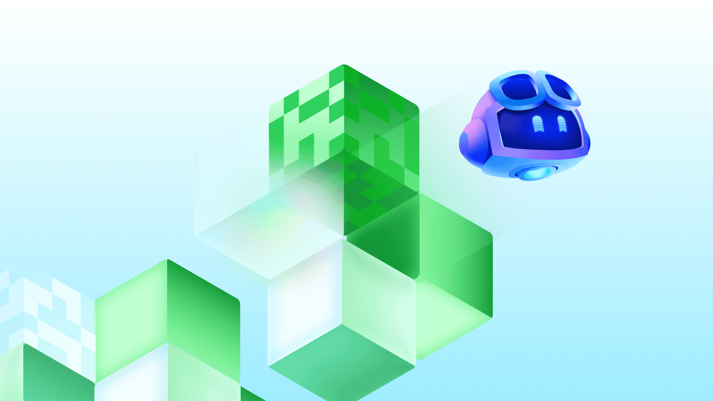
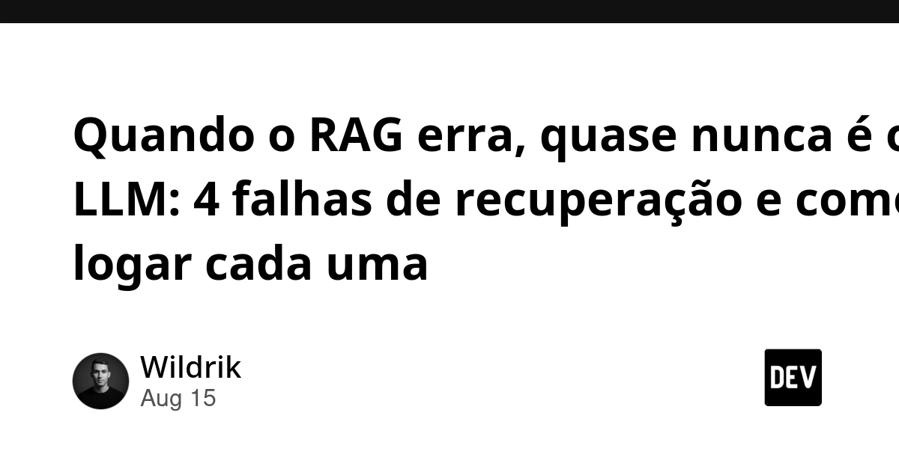
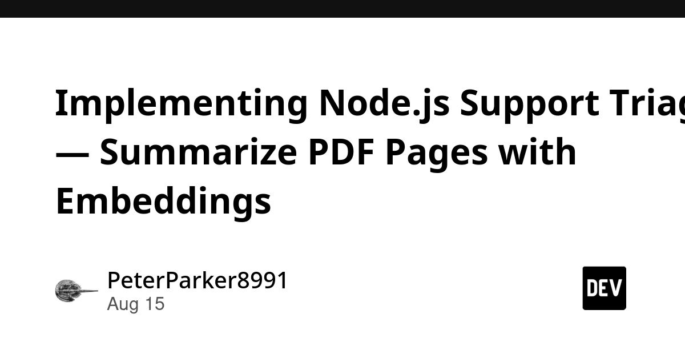
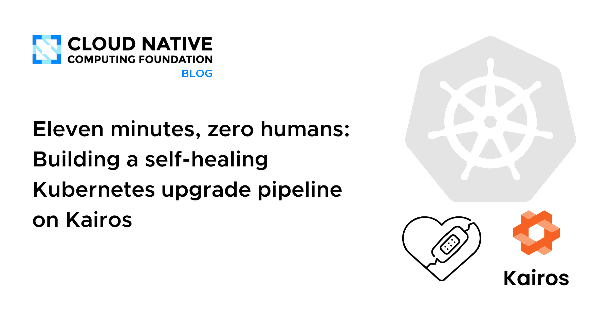
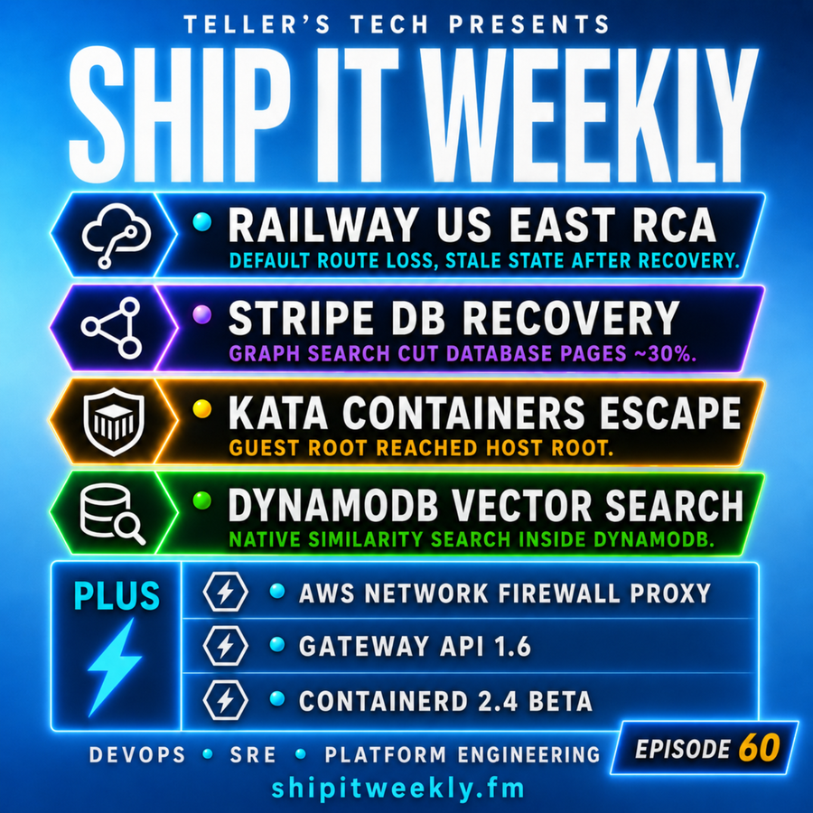
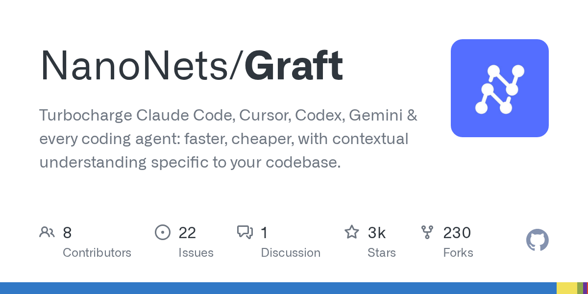
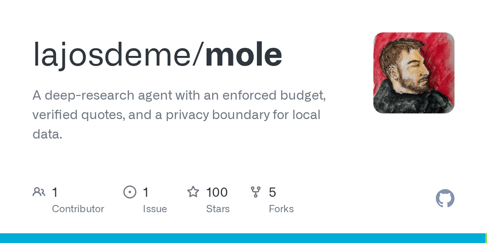
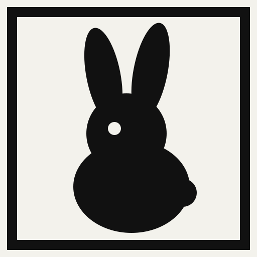
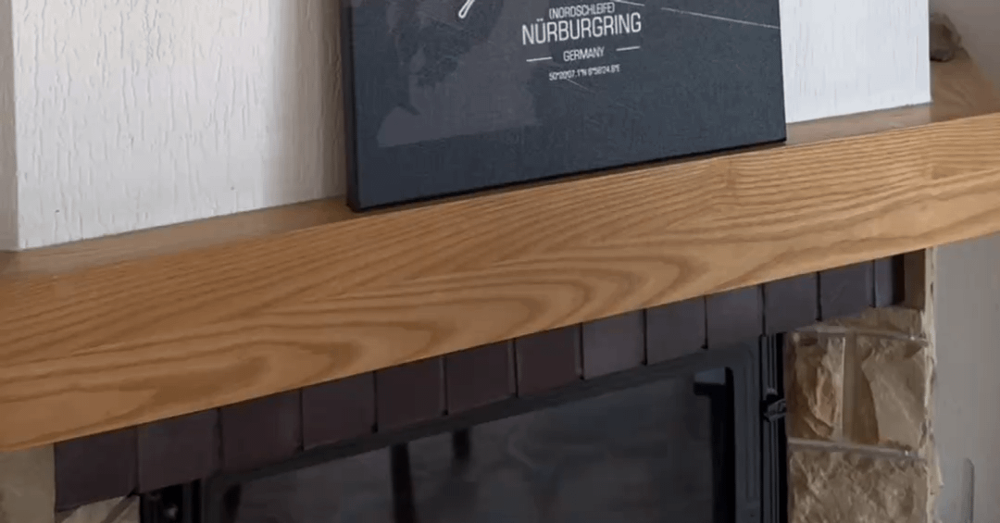

🔥 Top 3 (must read)
Maximizing the value of your Claude Code sessions
Anthropic's official guide on getting more out of Claude Code sessions, with a lively HN thread (139 points, 95 comments) debating the tips. Covers how to structure sessions so context and cost stay under control. You use Claude Code daily and manage a team that could adopt these practices — this is the highest-leverage read today. (HN discussion)
How to bring your software delivery workflow into GitHub with agent apps
GitHub shows four agent apps that scope, secure, roll out, and ship a feature across the whole delivery cycle without leaving GitHub. It is a concrete picture of agents wired into the SDLC, not just autocomplete. As an EM, this is a preview of how your team's delivery process may look once agents own whole workflow steps.

GLM-5.3: Frontier coding with emergent cyber capabilities
Z.ai released GLM-5.3, a frontier-level coding model, and the HN thread is one of the biggest of the day (1041 points, 516 comments). A strong open competitor to Claude and GPT for coding agents changes pricing and tooling options. Worth knowing what your coding-assistant alternatives look like before your next tool decision. (HN discussion)
Z
🤖 AI for developers
Don't classify. Hallucinate!
Simon Willison highlights Doug Turnbull's trick for tagging with a huge tag set: let the LLM invent tags freely, then match the invented tags to your real ones with embeddings. Cheap and clever.
S
How Claude's text watermarking works
Anthropic explains the mechanics of its text watermark. Useful background if your team ships or reviews AI-generated content.

Quando o RAG erra, quase nunca é o LLM
(Portuguese) Four retrieval failure types in RAG pipelines and how to log each one. The core point: instrument what retrieval returns before blaming the model.

Node.js support triage: summarize PDF pages with embeddings
A Node.js design that splits PDF retrieval from answer generation and only assigns a support queue when cited pages back the decision.

👔 Engineering & teams
Eleven minutes, zero humans: a self-healing Kubernetes upgrade pipeline on Kairos
CNCF post on fully automated control-plane upgrades: immutable OS images, automatic rollback, no SSH. A good case study for reducing upgrade toil.

Ship It Weekly: Railway US East outage, Stripe's graph-based database recovery, Kata Containers host escape, DynamoDB vector search, Gateway API 1.6, containerd 2.4
Dense infra roundup. Standouts: Railway's postmortem on storage traffic falling back onto the management network, and Stripe cutting database pager volume ~30% with graph search plus state machines.

🎯 For me
Claude Code sessions guide
The maps directly to how you work every day — and the HN comments are a good source of team-level adoption tips.
GitHub agent apps post
The is the EM read: it shows what "the team adopts AI" looks like at the process level, not the editor level.
Kairos Kubernetes pipeline
The hits your DevOps/SRE interest with a concrete, copyable setup.
💡 App ideas & indie builds
Graft — Claude Code hooks that cut grep tokens by 42%
Solves a pain you feel directly: agent searches burn tokens on raw grep output. It hooks into Claude Code and compresses search results. Small, focused dev-tool ideas like this ship fast and find users fast. (HN)

Mole — deep research agent for your terminal
A research agent that lives in the terminal instead of a web app. The insight: meet developers where they already work. Same pattern could apply to many "web-first" tools. (HN)

LuaCAD — parametric CAD scripted in Lua
CAD as code for people who would rather script a part than click through a GUI. Notably, an r/SideProject builder is attacking the same problem from the "simpler GUI" side — two takes on "professional CAD is too heavy." (HN)
L
Mininote — instant plain-text notes, no tracking or lock-in
Bets that people are tired of heavy note apps: open a page, type, done. A reminder that "remove features" is a valid product strategy. (HN)

Wireless LED light paintings
A physical product that went from hobby to side project to full-time job over 7 years. The user problem is decor that doubles as lighting; the lesson is that slow-burn niche products can become a living.

🎓 Try this
Try the hallucinate-then-match tagging trick from Don't classify. Hallucinate!: ask the model to invent tags for your content with no tag list in the prompt, then map the invented tags to your real taxonomy with embedding similarity. Works anywhere you have a large label set — support tickets, docs, or your own reports.